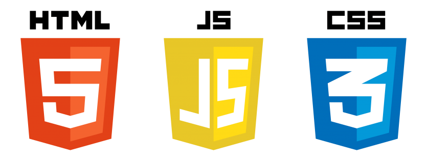
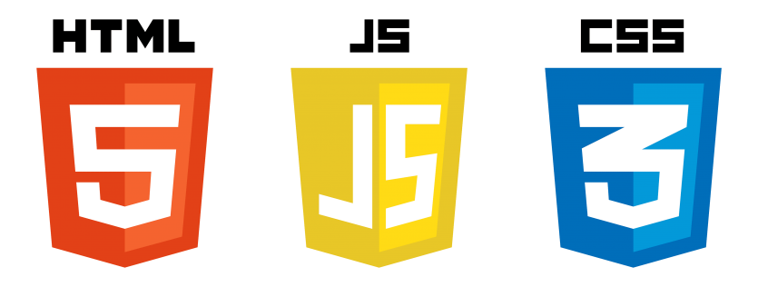

HELLO-!
개발자를 희망
하게된 계기는 저만의 아이디어를 직접 구현할 수 있다는 점에 크게 매료되었습니다.
저의 원래 희망 직군은 '해외 현지 가이드' 였습니다. 2019년도경 세계 각지를 돌아다니며 가이드의 꿈을 키우던 저는
2020년 전 세계적 유행병으로 인해 여행을 마치고 한국으로 귀국했고, 여행 산업의 붕괴를 지켜보며 저의 꿈을 접을
수 밖에 없었습니다.
그런데 위기를 기회라 부르던가요?
사람들에게 서비스를 제공하고 싶었던 저는 개발자라는 직군을 알게되었고, 단숨에 빠져들게 되었습니다.
하지만 개발 공부에 익숙하지 않아 지식 습득에 힘들었던 저는 졸업 이후 '쌍용교육센터'의 [Java 기반 임베디드 플랫폼 연동 융합 개발자 양성 과정] 에
참여하여 다양한 분야의 개발을 배워 볼 수 있는 좋은 기회를 통해 성장할 수 있었습니다.
저는 언제나 배움을 게을리하지 않고,
새로운 것을 도전하는데 머뭇거리지 않을 것 입니다.
상세 인적 사항

 


포트폴리오